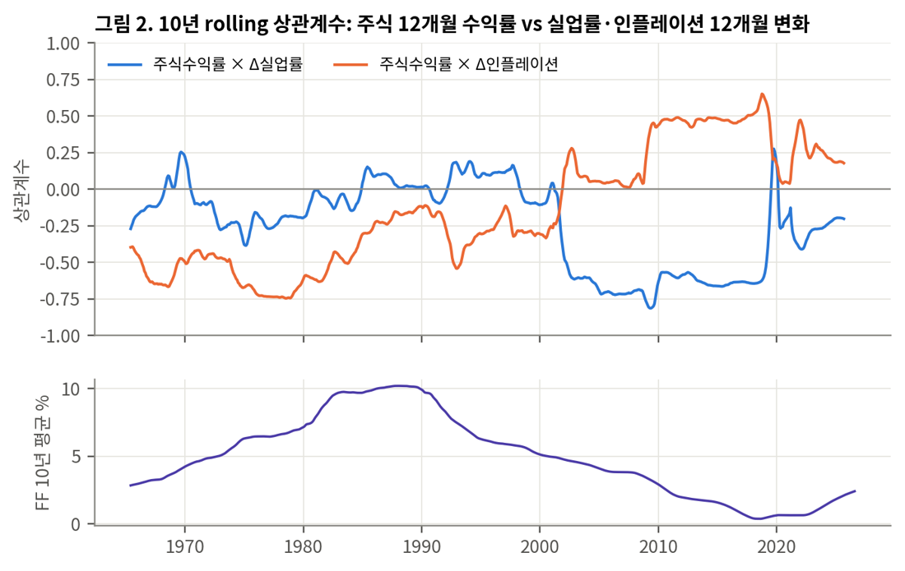

Research & Work
다음 작업물을 준비하고 있습니다.
Experience
2022.07 – 2024.02
쿼터백그룹 / Moonbit LLC
AI Algorithm / Quant Developer — 머신러닝 기반 자산배분, 디지털자산 전략 개발
2020.02 – 2021.04
소프트위즈
FID팀 매니저 — 틱데이터 수집 시스템, 차익거래 전략 백테스트, 해외지사 선물 딜링데스크 구축, 자기자본 리스크관리 정책
2019.09 – 2020.01
알투브이
Director of Derivatives Structuring — 비트코인 무기한 계약·청산소 등 파생상품 플랫폼 금융구조 설계, 유동성 공급 헤지 알고리즘
2018.07 – 2019.07
후오비코리아
전략기획실 Analyst
2013.12 – 2018.07
KB손해보험
시장자산운용부 포트폴리오 매니저 — 해외채권 운용, FX 헤지, 구조화채권, Black-Litterman 자산배분 모델링
인턴
한국투자공사(KIC) 주식운용팀 · INVEX투자자문 알파투자팀
Education & Skills
학력
KAIST 수리과학과 · 경영과학과 (복수전공)
민족사관고등학교
기술 · 자격
Python, R, SQL, Java, JavaScript, VBA
투자자산운용사, 펀드투자상담사